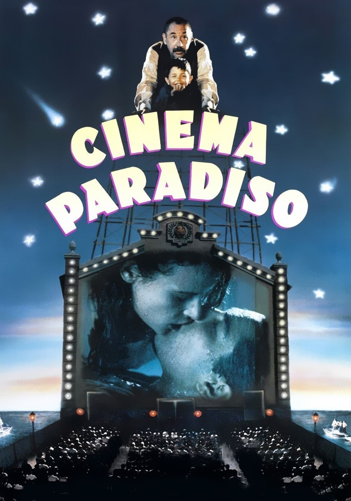
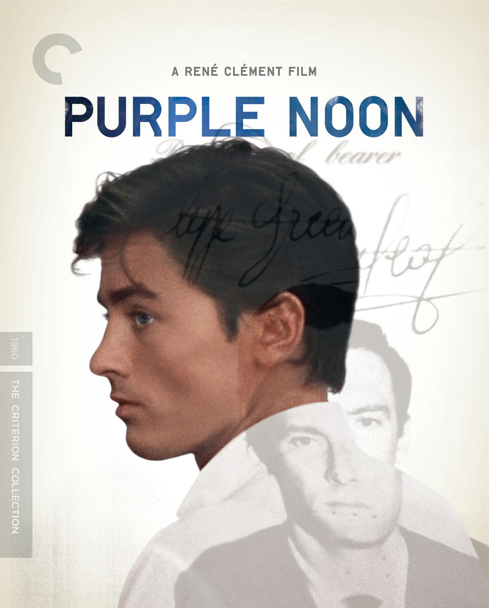
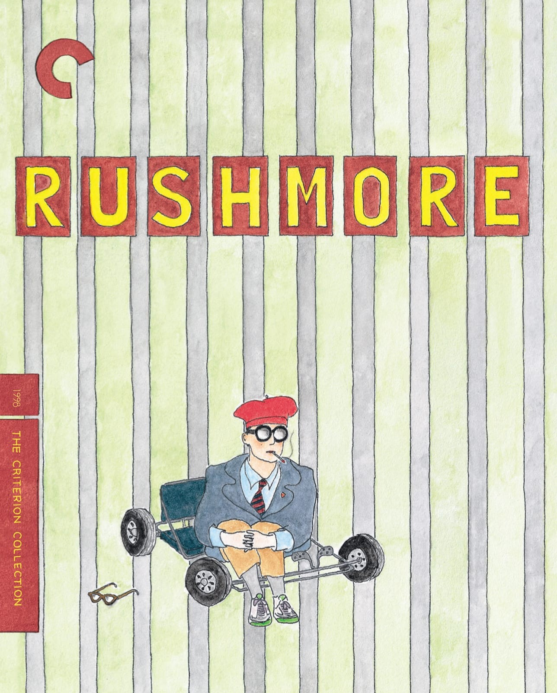
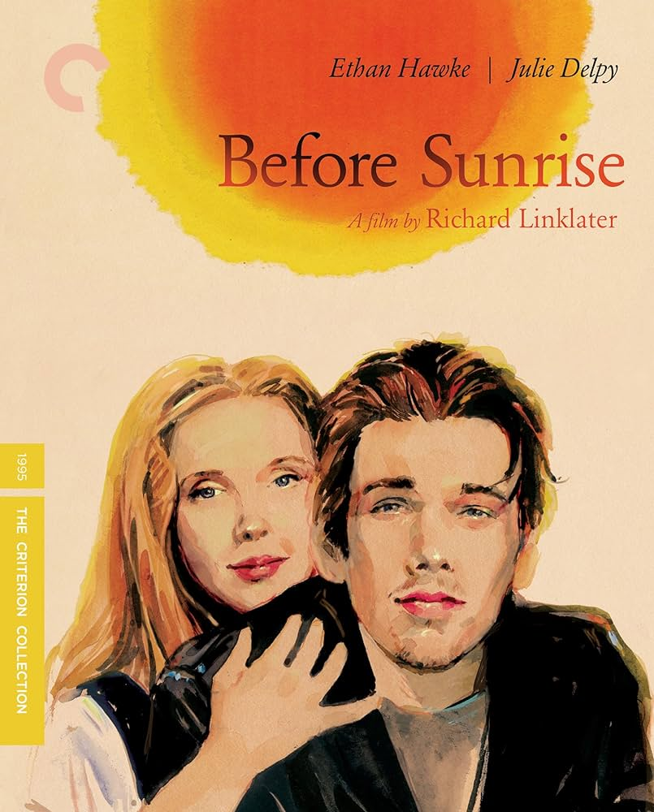
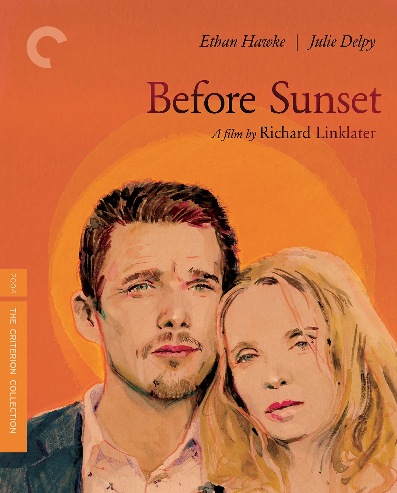
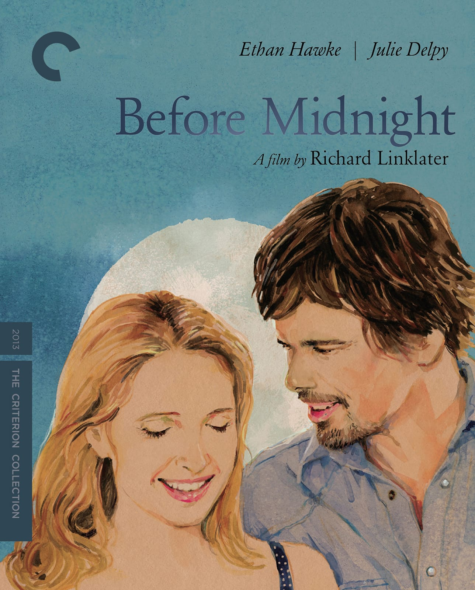
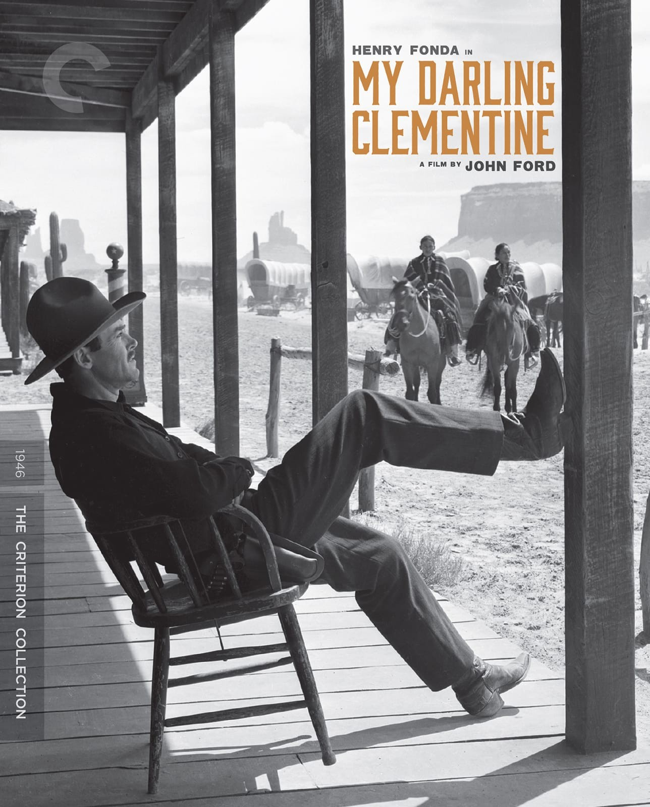
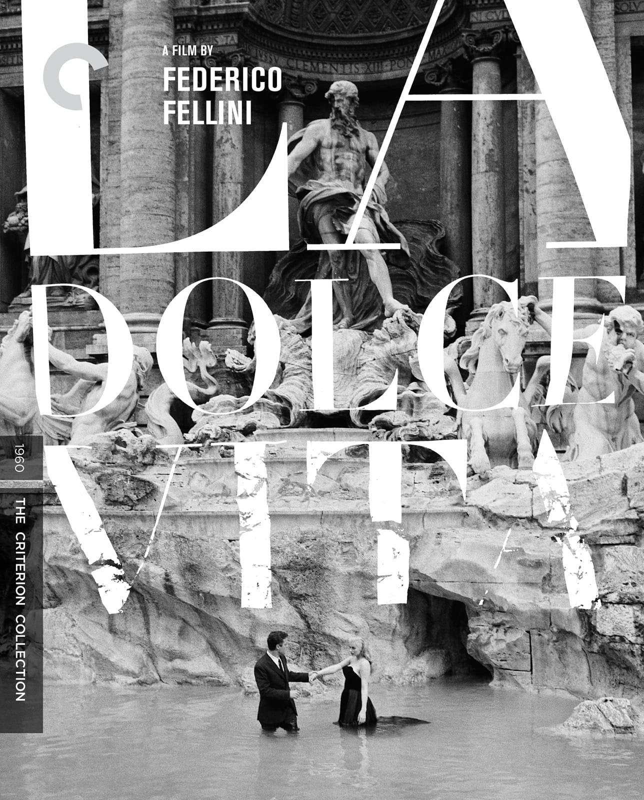

Current Favourites









Salvatore's mentor, Alfredo (Philippe Noiret), has died. Salvatore hasn't been home for 30 years. Before returning for the funeral, he reminisces about his life and the effect Alfredo has had on it. He also remembers the only woman he ever loved, Elena (Brigitte Fossey)...
If René Clément’s Purple Noon (1960) is not a guilty pleasure, it certainly feels like one. But before getting to the guilt, a word about the pleasure. Aside from anything else, it is a film that lingers in the mind as an irresistibly satisfying slice of worldly enjoyment. The original title, Plein soleil, conveys the pervasive power of that enjoyment, with its suggestion of the Mediterranean sunlight in which so many of the film’s scenes are baked. When it first came out in America, Purple Noon was like an advertisement for a life of luxurious sensuality, with hints of La dolce vita–style decadence and New Wave–style modishness, pristinely opulent hotel rooms and lobbies, and large helpings of sand and sun. The passage of time has only accentuated that allure, since the Italy we sample here in such generous detail is a vanished tourist’s dream, underpopulated and unpolluted, a paradise for footloose Americans: the seaport waterfronts teeming with fresh-caught fish, the bodies bronzed from long and carefree afternoons in the sun, the luscious blues and greens of a sea made for open-ended yachting excursions...
Whenever you’re watching a Wes Anderson movie, there’s no denying that you’re watching a Wes Anderson movie. The writer and director has made a number of films that feature profound uniqueness that set them apart. His quirky humor is unique in itself but Anderson is also known for his own visual style and presentation, his clever use of music, and familiar reoccurring themes that you can’t help but notice. In 1998, Anderson released “Rushmore”, his second feature film and one of his many collaborations with old friend and co-writer Owen Wilson. “Rushmore” is a perfect introduction to Anderson and his special brand of humor. And while the movie – just like all of Anderson’s pictures – won’t appeal to everyone, I found it to be an infectious comedy from start to finish...
How Before Sunset deeply affects so many people can’t be so easily defined. For each viewer who exits the theater swooning, claiming that Richard Linklater’s masterwork is the ultimate depiction of an idealized romance, there’s another that claims its impact is based upon its shattering of those very same ideals. Whether its gently radical real-time linearity firmly grounds it in our world or in some ethereal movie netherworld is the real trick of the film; Julie Delpy and Ethan Hawke’s insistent outpouring of conversation occurs in such a sustained current of generosity and ever-deepening complexity that “realism” ultimately seems beside the point. The honesty, compassion, and profound necessity of interconnection in Before Sunset is so fruitful that words such as “poignant” and “bittersweet” don’t really cut it, nor do strict generic reductions, such as Romantic Comedy or “Rohmer-lite.” Arguably, Linklater’s reliance on his deceptively meandering, increasingly urgent 80-minute structure helps the film ascend to a higher plane of human consciousness rather than entrench it in mere beat-the-clock suspense gimmickry...